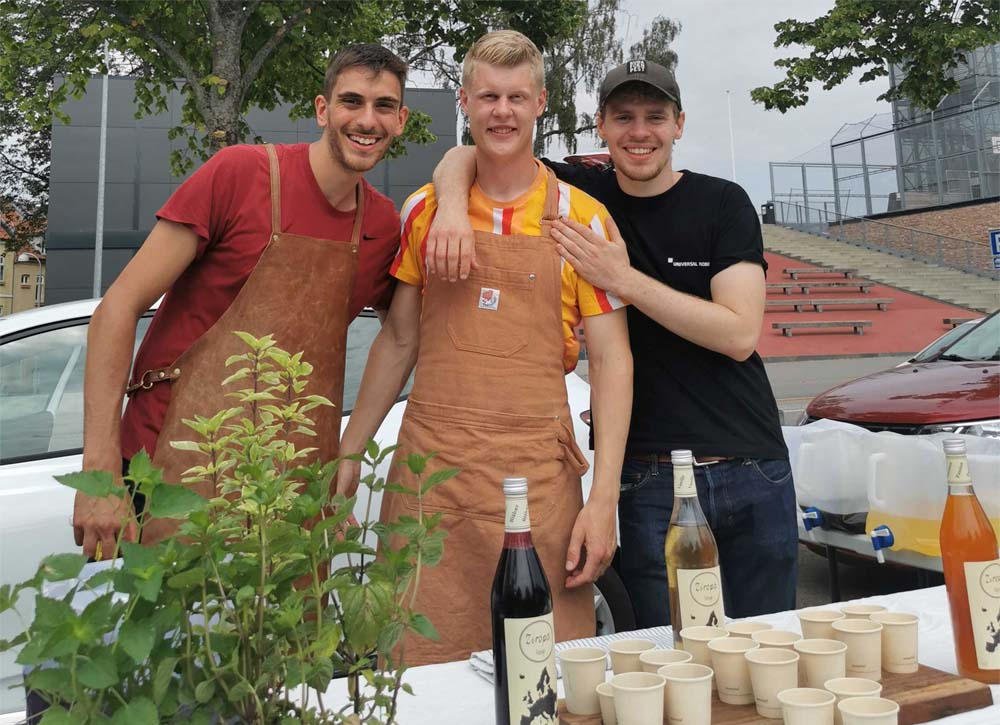
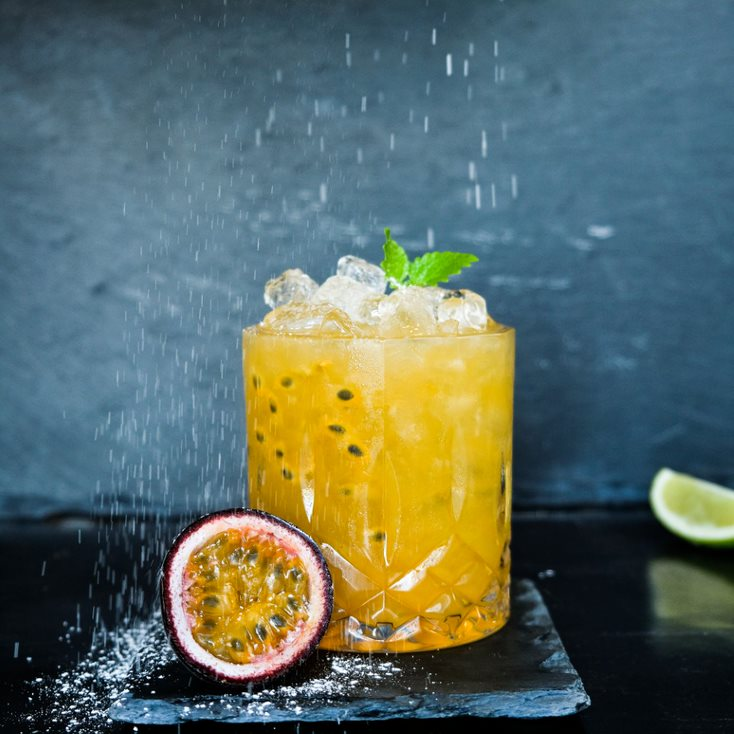

Historien bag Ziropa
Ziropa udsprang hos tre unge studerende med et stærkt iværksætter drøm i maven. De er drevet af et ønske om at kunne bidrage med et fantastisk lækkert produkt, som kan forbedre kvaliteten af drinks og lemonade. Visionen var at gøre det simpelt at lave drinks.

Det unikke ved Ziropa
Ziropa har en fantastisk smag, ægte smag af ægte råvarer og har også fantastiske flotte lækre farver.
De lækre smage og farver kommer ikke fra tilsætningsstoffer eller aromaer dog alt dette stammer fra de ægte frugt og bær.
Ziropas-produkter basisk kan bruges til mange forskellige ting heriblandt cocktails, kaffe og smoothies.
Desuden er det også et super produkt, der kan skabe værdi ude hos vores kunder.